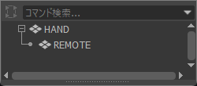
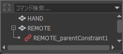
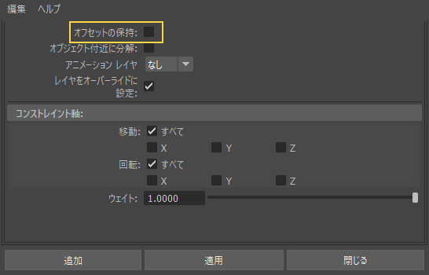

Parent（親子付け）
＝「家族関係を作る」
- 常に親についていく
- シーンの構造（Hierarchy）が変わる

+9の授業 ／ 座学 08
一言でいうと？
「あるオブジェクトの動きを、
別のオブジェクトに従わせる仕組み」
身近な例
リモコンを持って歩くと、
リモコンは手についてくる。
→現実では当たり前だが、
CGでは手とリモコンは別々のオブジェクト。
そのため、
「手が動いたらリモコンもついてくる」
という設定が必要になる。
この設定がコンストレイン。
親子関係（Parent）との違い
よく混乱する話
Parent（親子付け）
＝「家族関係を作る」

Constraint（コンストレイン）
＝「約束をする」

いろいろな種類のコンストレイン
動画は ▶ で再生できる。
橙＝動きを与える側、紫＝ついてくる側、
黒い線と三角＝正面の向き。
Point
位置だけを追従
（回転は自由にアニメーションできる）
例：風船が人の手についてくる。
Orient
回転だけを追従
（位置は自由にアニメーションできる）
例：車のタイヤが
ハンドル操作に合わせて向きを変える。
Parent
位置＋回転を追従
（親子付けに見栄えはよく似ている）
例：人がリモコンを持つ（手放す）。
Aim
常に相手（ターゲット）を見る
例：キャラクターの目。
Pole Vector
IKの向きを決める座学 07IK
（アップベクター）
例：肘や膝の方向。
…他にも色々ある。
コンストレインでは、
Mayaでは一般的に、次のように考える。
例えば、手に剣を持たせる場合「手 → 剣 」は、
「剣を手にコンストレインしておいて…」
というように、
Mayaの構造と会話では逆に聞こえる時がある。
判断するときの順番
基準になるものを先に考える
「何が動いたときに、何がついてくるのか」を考える。
| 動きを与える側 | 制御される側 |
|---|---|
| 頭が動く | 帽子がついてくる |
| 手が動く | 剣がついてくる |
| 敵が動く | カメラが敵を見る |
何を追従させるかを決める
次に、
必要なのが位置・回転・向きのどれかを判断する。
例えば帽子は、
頭の移動だけでなく傾きにもついてくる必要なため、
頭 → 帽子 ＝ 位置＋回転 Parent Constraint となる。
コンストレインをする対象
実制作では、
モデル本体（メッシュ）へ直接コンストレインを
設定するより、
上位のグループやロケータへ設定することが多い。
SWORD_CONSTRAINT_GRP └─ SWORD_GEO
この場合、
コンストレインを設定する対象はSWORD_GEOではなく、SWORD_CONSTRAINT_GRPに入れることが多い。
SWORD_ATTACH_CTRL → Parent Constraint → SWORD_CONSTRAINT_GRP
なぜグループに設定する？
モデル本体（メッシュ）へ直接設定すると、
TranslateやRotateがコンストレインで制御され、
手動で調整しにくくなる。
SWORD_CONSTRAINT_GRP：追従を担当 （グループ） └─ SWORD_OFFSET_GRP：位置や角度の微調整 （グループ） └─ SWORD_GEO ：表示モデル （メッシュ）※基本コンストレインやアニメーションには関与しない。
アニメーション制作では、
ロケータを使用することが多い。
アタッチポイントを作る
手や頭の中心にそのまま小物を追従させると、
位置が合わない場合
（メッシュの基点が違う場合）がある。
そのため、装着位置を示すロケータやコントローラー
（本来あってほしい基点位置）を作る。
RIGHT_HAND_CTRL：手のコントローラー └─ SWORD_ATTACH_CTRL：武器を持たせる時にカチッとアタッチしたい場所 ※武器ヌルと言われることが多い。
剣は手そのものではなく、SWORD_ATTACH_CTRLへ追従させる。
SWORD_ATTACH_CTRL － Constraint － SWORD_CONSTRAINT_GRP
これにより、
剣を握る位置や角度を分かりやすく管理できる。
選択順
制御する側を選択 → 制御される側を選択 という順番。
例えば手に剣を持たせる場合は、
SWORD_ATTACH_CTRLSWORD_CONSTRAINT_GRP先に動かす側、次に動かされる側。
Aim Constraintの場合演習 07課題4
Aim Constraintでは、ターゲット自身の回転ではなく、
ターゲットが存在する方向を使用する。
少し考え方が違う
ENEMY_AIM_TARGET_CTRL → Aim Constraint → CAMERA_AIM_GRP
この場合、
実際のカメラ本体ではなく、
上位のCAMERA_AIM_GRPへ設定すると扱いやすくなる。
複数の追従先がある場合演習 07課題3
荷物の受け渡しでは、
1つのオブジェクトに複数のコンストレインを設定する。
左手 / 机 / 右手 → 荷物
この場合、
荷物側に複数ターゲットの
Parent Constraintを設定し、
Weightを切り替えて制御する。
よくある失敗
コンストレインを付ける時に
「オフセットの保持」がオフだと、
動きを受ける側は、
相手の位置と向きにぴったり合わせられる。
対処法
「オフセットの保持（Maintain Offset）」は、
コンストレイントのメニューの各項目の □ で開く
オプションにある。
